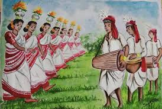
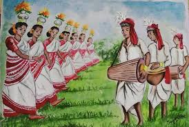
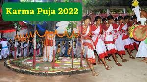
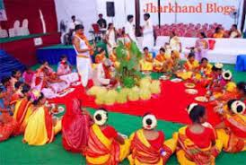
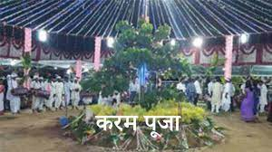
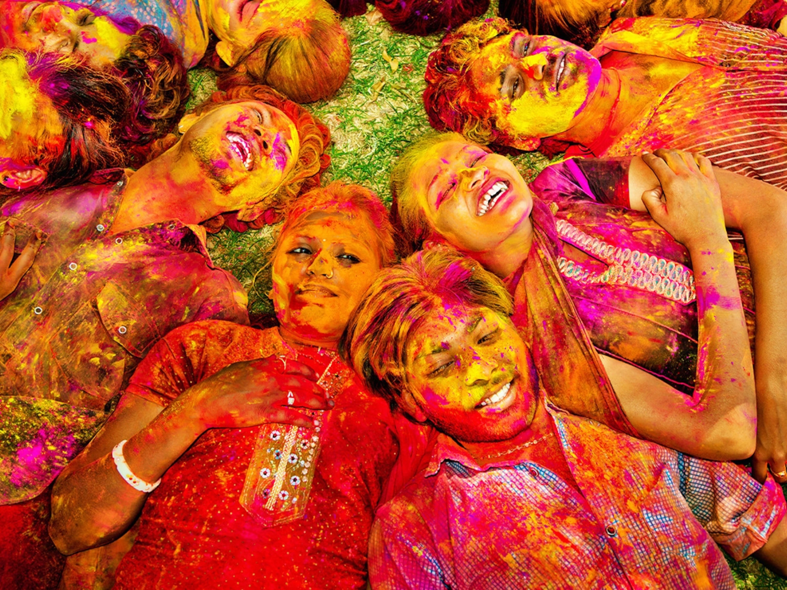
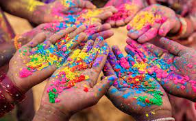

CULTURE OF JHARKHAND
Jharkhand culture is rich and diverse and as a result unique in its very own way. Jharkhand culture treats guests as God and serves them and takes care of them as if they are a part and parcel of the family itself. Archaeologists have unearthed pre-Harappa pottery, pre-historic cave paintings and rock-art from various parts of Jharkhand. That hint at ancient, cultured civilizations inhabiting these parts. The intricate woodwork, the pitkar paintings, tribal ornaments, stone carvings, dolls and figurines, masks and baskets, all are pointing towards the cultural wealth of Jharkhand existed even before the Harappa age. Among the most delicate, fragile, beautiful and threatened indigenous tradition of India are for example, the Kohvar and Sohrai paintings, which are sacred, secular and relevant to a woman’s world. This is the part practiced exclusively by married women, during weddings and at harvest time, and the skill and the information is handed down to younger females of the clan. Comb-cut of finger-painted Kohvar art celebrates marriage, and the wall-painted Sohrai, bumper crops. Elaborate design motifs, animal and plant forms, fertility motifs are abundant and often echo ancient cave art found in the surrounds. The colours used are all natural shades, red oxide from stone, red ochre, kaolin white, manganese black earth etc.
.jpg) 

.jpg)
LANGUAGE :
Hindi is official language of Jharkhand. There are many regional and tribal languages in Jharkhand.[1] The regional languages that belong to the Indo-Aryan branch; in Jharkhand, they are Khortha, Nagpuri, and Kudmali spoken by the Sadan, the Indo-Aryan ethnic groups of Chotanagpur.[2] Other Indo-Aryan languages include Bhojpuri, Magahi, Maithili, Bengali, and Odia.[3] The languages that belong to the Austroasiatic branch are Mundari, Santali, Bhumij and Ho. The languages that belong to the Dravidian language family are Kurukh and Malto
CUISINE :
Hindi is official language of Jharkhand. There are many regional and tribal languages in Jharkhand.[1] The regional languages that belong to the Indo-Aryan branch; in Jharkhand, they are Khortha, Nagpuri, and Kudmali spoken by the Sadan, the Indo-Aryan ethnic groups of Chotanagpur.[2] Other Indo-Aryan languages include Bhojpuri, Magahi, Maithili, Bengali, and Odia.[3] The languages that belong to the Austroasiatic branch are Mundari, Santali, Bhumij and Ho. The languages that belong to the Dravidian language family are Kurukh and Malto
FESTIVAL :
KARMA
Karam is a major native harvest festival of Jharkhand. It is celebrated on the 11th day of a full moon of the month of Bhado by the Sadan (Khortha, Nagpuri, Kurmali-speaking ethnic group) and the tribal (Munda, Bhumij, and Oraon) people of Jharkhand.[10] During this festival, people bring branches of the Karam tree to the village and then place them on the ground. The branches are washed with milk and handia, and decorated with garlands, curd, rice, flowers and grains. The village priest "Pahan" offer sacrifice of Karam devta for good harvest.
  
JITIA
During the festival of Jitia, mothers fast for the well being of their children. It is celebrated from the seventh to the ninth lunar day of Krishna-Paksha, in the month of Ashwin.
HOLI
Phaguwa, or Holi, is the spring festival which falls in the month of Phalgun. In spring, people collect sal flower blossoms and place them on their roofs. There are special songs and dances for this festival.
 
Holi ( /ˈhoʊliː/), also known as the Festival of Colours, the Festival of Spring, and the Festival of Love,[1][9][10] is an ancient Hindu religious festival and one of the most popular festivals in Hinduism.[1][11] It celebrates the eternal and divine love of Radha Krishna.[12][13] The day also signifies the triumph of good over evil,[14][15] as it commemorates the victory of Lord Vishnu as Narasimha Narayana over Hiranyakashipu.[16][17] It originated and is predominantly celebrated in the Indian subcontinent but has also spread to other regions of Asia and parts of the Western world through the Indian diaspora.[9][18][19][20][21][22] Holi celebrates the arrival of spring, the end of winter, the blossoming of love and for many, it is a festive day to meet others, play and laugh, forget and forgive, and repair broken relationships.[18][23] The festival is also an invocation for a good spring harvest season.[18][23] It lasts for a night and a day, starting on the evening of the Purnima (Full Moon Day) falling in the Hindu calendar month of Phalguna, which falls around the middle of March in the Gregorian calendar. The first evening is known as "Holika Dahan" or "Chhoti Holi" and the following day as "Holi", "Rangwali Holi", "Dol Purnima", "Dhuleti", "Dhulandi",[24] "Ukuli", "Manjal Kuli",[25] "Yaosang", "Shigmo",[26] "Phagwah",[27] or "Jajiri".[